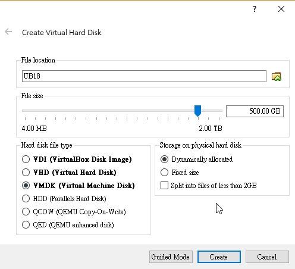
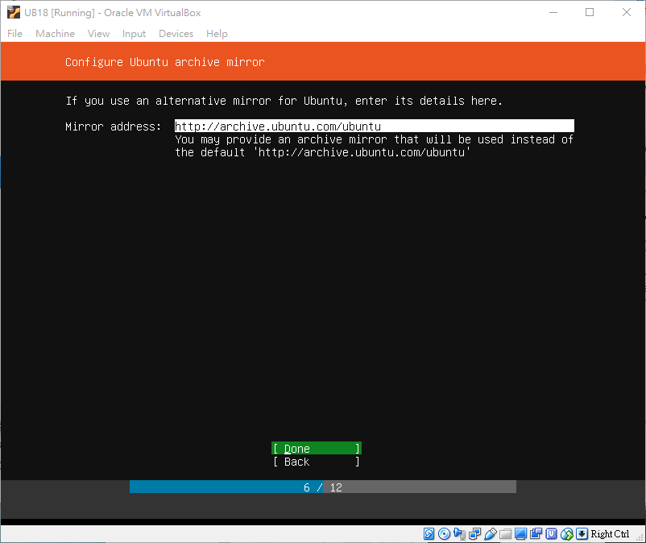
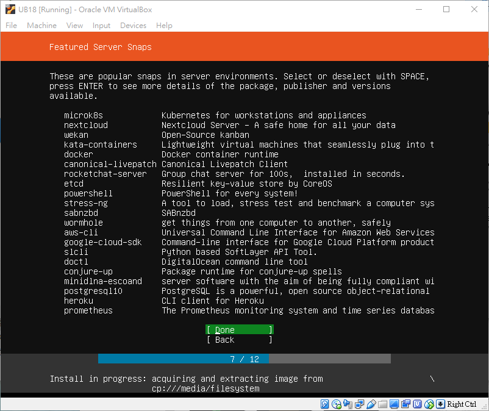

SSL-VPN <<
Previous VM 虛擬主機
1.到ubuntu網站下載Sever
ubuntu網站:https://www.ubuntu.com/

1.打開VM-->創建一台虛擬主機

2.設定主機名稱及分配記憶體(不建議低於2048MB)

3.Flie size通常都使用500GB,硬碟檔類型使用VMDK之後轉實體比較方便
基本上我們的硬碟分配會使用動態分配(Dynamically allocated)用多少拿多少
如果使用固定大小會很吃電腦的硬碟容量

4.設定完打開虛擬主機--->載入檔案

5.按Start-->設定
選擇English語言
這裡不用改直接Done

這裡選第一個安裝,其他兩個是多主機雲端協同用的
這裡是網路設定,現在是以NAT,就可以直接下一步了

這裡是設定proxy,打上學校使用的proxy http://140.130.17.4:3128
若不使用可留白

這是ubuntu的鏡像網址,保留預設就好

這裡是要分割硬碟,並格式化,這裡選第一個使用整顆硬碟來格式化

這裡是要安裝的硬碟

確認之後就可以開始格式化了


再來要設定名稱和密碼

這是問你要不要使用SSH key,打勾Install OpenSSH sever,就可以下一步了

這裡直接下一步

等待安裝完就完成了

安裝完選擇Reboot Now就可以使用了

剛開始進入它會叫你輸入名稱和密碼,因為使用sudo都需要登入
如果要關機要打指令sudo halt 這是關機並沒有關閉電源
使用sudo shutdown -h now 關機並關閉電源
SSL-VPN <<
Previous